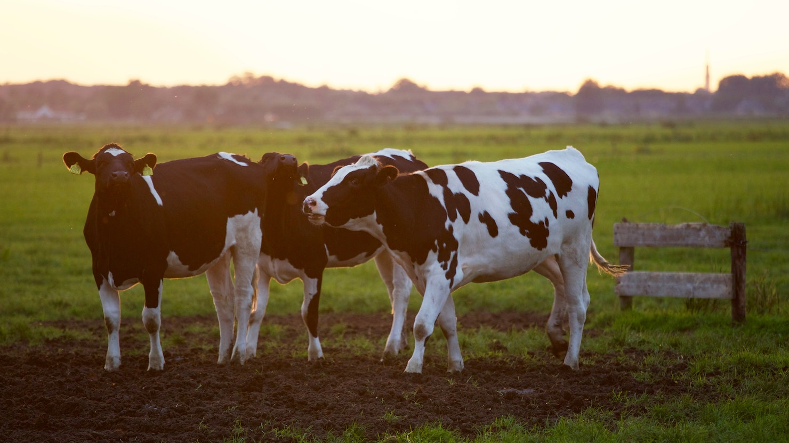
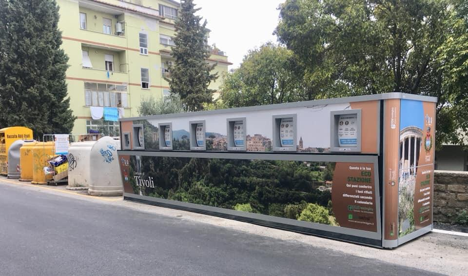
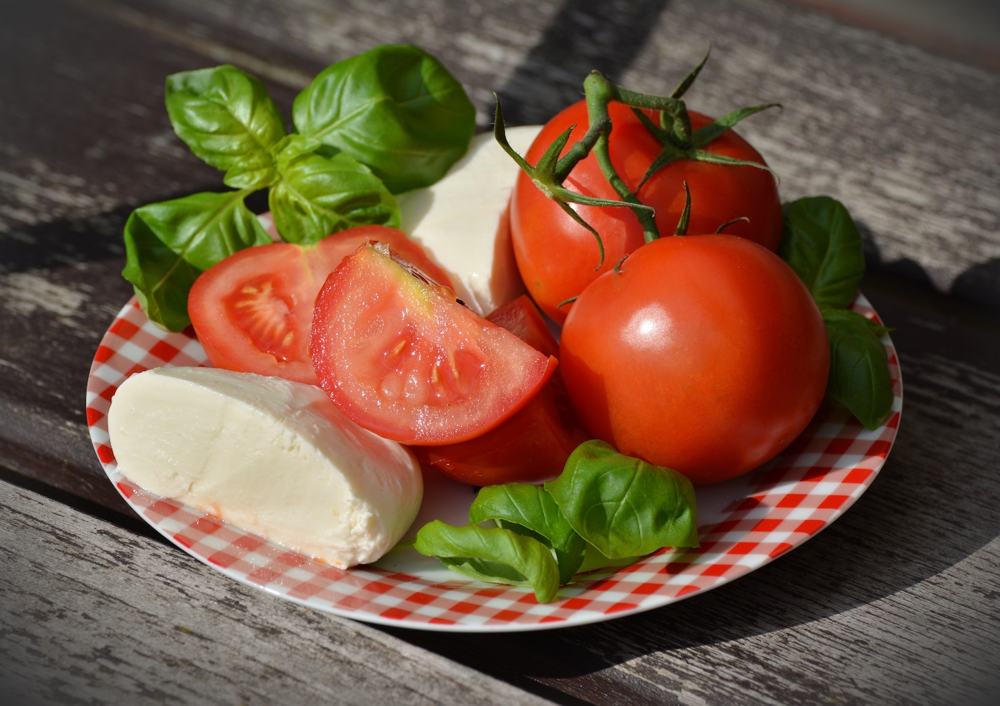

Agricoltura¶
{kind=link}
Il Comune deve essere di sostegno alla promozione del proprio territorio in tutte le sue espressioni dalle più tradizionali a quelle più avanzate e innovative.
La tipicità dei prodotti locali insieme alla loro qualità, sicurezza alimentare e sostenibilità ambientale sono le variabili su cui fondare una politica di marketing territoriale che comprenda anche la valorizzazione delle tradizioni e prodotti tipici locali.
Le produzioni agroalimentari locali rappresentate da Consorzi e Associazioni di Produttori, saranno sostenute per privilegiare il contatto diretto tra produttore e operatore, sia buyer oppure HO.RE.CA attraverso eventi, sagre e incontri per favorire la ricerca nel settore con Università, Spin-Off e StartUP innovative.
Incentivare l’innovazione tecnologica applicata all’agro-zootecnia per potenziare la tracciabilità agroalimentare, semplificare la burocrazia, garantire la qualità e sicurezza dei prodotti lattiero-caseari nel rispetto della fertilità del suolo, riduzione delle emissioni di CO2 per valorizzare la filiera lattiero-casearia.
AgroCittà¶
Gli allevatori e produttori dell’agro gioiese hanno diritto ad avere servizi efficienti e non devono più sentirsi trascurati e abbandonati. La nostra coalizione intende lo spazio urbano come un territorio che ingloba anche le campagne gioiesi diventando una grande AgroCittà con al centro l’Agricoltura gioiese, importante per il nostro sviluppo sociale ed economico grazie alla sua capacità attrattiva e forte identità storica.
Essere un Agrocittà significa che l’agro gioiese deve godere degli stessi diritti di tutti cittadini gioiesi. La riqualificazione delle aree agricole a sostegno dell’agricoltura locale sarà parte integrante dei percorsi partecipativi per redigere il nuovo Piano Urbanistico, in rete con i comuni limitrofi per co-progettare soluzioni per risolvere le criticità diffuse sulla viabilità e per il rispetto dell’ambiente, soprattutto per valorizzare il territorio a favore del turismo agricolo.
Gestione rifiuti nell’agro gioiese¶
Valutare l’ipotesi di una Eco Stazione, che permetteranno di risparmiare sui costi di raccolta e sulla tariffa TARI, aumentata oltre il 60% per le zone rurali.
{kind=link}
Infrastrutture e Viabilità¶
Ripristinare servizi essenziali per la comunità montana partendo dalle necessita come ad esempio :
la sostituzione del macchinario di erogazione dell’acqua dal pozzo in località Montursi;
potenziamento della rete Internet per le famiglie di allevatori residenti nell’agro gioiese.
Tavolo #MadeinGioiadelColle¶
{kind=link}
Tavolo di partecipazione e co-progettazione di proposte e strategie insieme alle Associazioni di categoria, Pro Loco, Consorzi di Produttori del Vino, della mozzarella DOP, Allevatori e Agricoltori per la valorizzazione, innovazione, promozione e tutela della nostra produzione agricola, la filiera lattiero-casearia, il nostro latte e i prodotti tipici locali enogastronomici e artigianali.
Campagna Amica a KM0¶
{kind=link}
Istituire una giornata periodica da dedicare alla Campagna Amica nel Mercato Comunale coperto e il tratto di Viale Regina Elena insieme alla Coldiretti, per promuovere le eccellenze della filiera agricola locale dal produttore al consumatore a KM0. Istituire attività di promozione dei prodotti locali durante lo svolgimento del mercato settimanale. Concessione di aree pubbliche dell’attuale Mercato Coperto da destinare alle aziende agricole, per la promozione dei prodotti tradizionali locali a KM0.
Siero del Latte, da rifiuto a risorsa economica¶
L’obiettivo è promuovere la realizzazine di una filiera produttiva integrata cha vada dai produttori della materia prima insieme ad Associazioni di categoria e Consorzio dei Produttori della mozzarella DOP, fino alla trasformazione finale per le imprese dolciarie e farmaceutiche.
Denominazione Comunale (DE.CO.)¶
Applicazione e aggiornamento del Regolamento DECO (Approvato in Consiglio Comunale di Gioia del Colle con Delibera n.12 del 05/04/2017) per la valorizzazione delle produzioni locali affinché si costituisca una commissione insieme alla Pro Loco, di rappresentanti del settore produttivo locale, il turismo e commercio, con l’obiettivo di attivare percorsi volti alla valorizzazione e sfruttamento delle possibilità offerte da tutti i prodotti tipici enogastronomici e dell’artigianato locale.
Tracciabilità e BlockChain¶
{kind=link}
Gli obiettivi dovranno assicurare la massima qualità della materia prima e dei semilavorati, la tracciabilità e sicurezza della filiera. Il Comune di Gioia del Colle come Nodo Capofila della Rete Antenna PON in Ricerca e Innovazione sarà promotore insieme ai centri di ricerca, Università e Aziende innovative che vorranno investire sul territorio di progetti di tracciabilità agroalimentare per valorizzare il latte prodotto dagli allevatori dell’Agro Gioiese.
Il consumatore finale sarò in grado di conoscere il lavoro e l’impegno di ogni allevatore, rendendosi conto di cosa succede, dietro ogni litro di latte una mozzarella o una forma di formaggio. Nonostante il recente obbligo di indicazione dell’origine sull’etichetta del latte, il Mercato agroalimentare odierno ha ancora molte difficoltà nel certificare l’origine e la qualità di un prodotto agricolo, che non aiuterà ad aumentare la fiducia dei consumatori e proteggere il made in Italy.
Il Comune insieme agli stakeholders ed enti di ricerca co-progetterà soluzioni per garantire una tracciabilità sicura utilizzando nuove tecnologie come la BlockChain, per permettere al consumatore di accedere a tutte le notizie riguardanti un singolo prodotto grazie ad Internet.
Con la legge di Bilancio per il 2019 emerge chiaramente che l’innovazione del Paese deve avere un impronta digitale. Infatti l’adesione dell’Italia alla Blockchain Partnership , l’istituzione presso il Mise del tavolo di esperti per definire una strategia nazionale sulla blockchain, fino alle nuove norme introdotte dal decreto-legge semplificazione 2 e presentazione del Fondo Nazionale Innovazione, indicano una strada spianata verso politiche di innovazione e potenziamento della filiera agroalimentare, favorendo la diffusione di Agricoltura 4.0.
L’Italia è leader assoluto nel campo delle eccellenze agroalimentari, sono un settore strategico per lo sviluppo dell’economia come si legge anche dal Report Attività 2018 del Ministero delle politiche agricole alimentari, forestali e del turismo (Mipaaft).
Il settore agricolo è in evoluzione e la tecnologia blockchain rafforzerà la tracciabilità proteggendo il futuro marchio DOP della mozzarella da frodi alimentari, ed invasioni di prodotto estero di scarsa qualità.
- 2
Le norme sulle tecnologie basate su registri distribuiti e smart contracts sono contenute nella Legge 11 febbraio 2019, n. 12 di conversione in legge del decreto-legge 14 dicembre 2018, n. 135, recante “Disposizioni urgenti in materia di sostegno e semplificazione per le imprese e per la pubblica amministrazione”